Browse by organizer
Studios, ateliers, associations and makers who run workshops and courses on The Crafty Club. Tap a name to see only their activities.
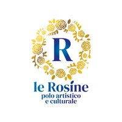
Polo Le Rosine
Arts and culture centre in central Turin: weekly courses and workshops in painting, drawing, calligraphy, sewing, cake design, photography, theatre and music, which fund its free social projects.27 activities coming up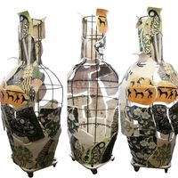
Pottery Lab
A ceramics studio with wheel-throwing and hand-building courses, themed workshops, a firing service and space to work independently.17 activities coming up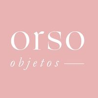
Orso Objetos
The Casa Orso studio in San Donato, teaching visible mending, sashiko, natural dyeing and cyanotype, in Italian, English and Spanish.14 activities coming up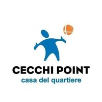
Cecchi Point
A neighbourhood community centre in Aurora, in the former factory on Via Cecchi, with dance, music, circus, crochet and collage courses run by local associations and teachers.13 activities coming up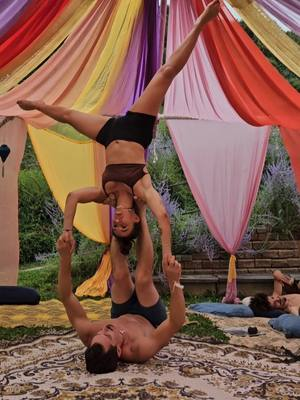
Bunker
The cultural venue on Via Paganini, in Barriera di Milano, with weekly courses in music, dance, theatre, writing and visual arts.12 activities coming up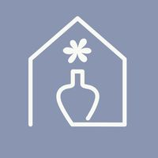
Spazio IAIA
A ceramics studio and creative space on Via Verzuolo: decoration, hand-building, and creative breakfasts and aperitivi.12 activities coming up- upTOyou
Courses, events and creative experiences for adults and children: crochet, sewing and origami.12 activities coming up  Bottega Botanica
Bottega Botanica
Valeria Icardi’s botanical workshops on Via Rocciamelone: kokedama, fresh flower bouquets, wreaths and little gardens under glass, over tea and biscuits.11 activities coming up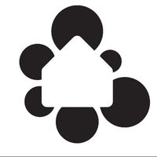
Casa nel Parco
The community centre of Mirafiori Sud: courses and workshops for all ages, from knitting to dance, from choir to writing.11 activities coming up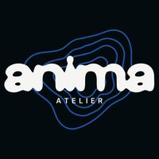
Anima Atelier
A cultural association and art studio on Corso Orbassano: drawing, painting, jewellery and writing workshops for anyone keen to experiment, even with no experience.10 activities coming up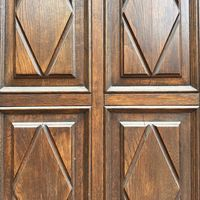
Atelier Crea-Arti
An art space in Cuneo, on the Lungo Gesso, with courses and workshops for all ages: ceramics, watercolour, art in English, jewellery, wreaths and lettering.9 activities coming up- Cooperativa Il Melograno
A social cooperative in Cuneo running educational workshops for children and teenagers, in Cuneo and Mondovì: cooking, comics and creative crafts.9 activities coming up 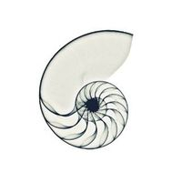
Il Nicchio di via Monti
A creative space in Vanchiglia for learning and experimenting with ceramics, with courses, workshops, exhibitions and events.9 activities coming up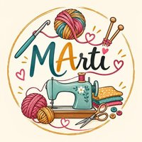
Le Arti di Marti
Martina of Le Arti di Marti runs creative and upcycling courses and workshops in Pinerolo for adults and children: crochet and amigurumi, sublimation mugs, lamps and baskets from reclaimed objects, and «Giovedì Kids».8 activities coming up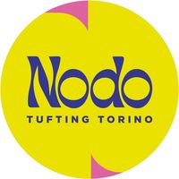
Nodo Tufting Torino
Giulia Mezzadri’s tufting studio on Via Guastalla, where you make your own rug with a tufting gun, plus macramé and screen printing evenings.8 activities coming up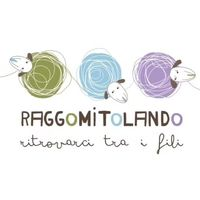
Raggomitolando
A shop for sustainable, Italian-made yarns in San Salvario, with knitting and crochet schools for beginners, project workshops and social knitting evenings.8 activities coming up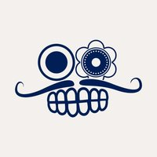
Comala
A youth space in the former La Marmora barracks, with study rooms, rehearsal rooms, a bar and a garden, and every week tournaments, game nights, workshops and dance classes.7 activities coming up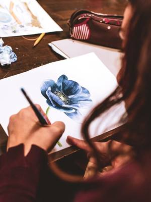
Kreative Club
An art school in Via Arvier (formerly Wellness Creative) that works like a creative gym: painting and drawing courses for adults and kids, plus lettering, urban sketching, sewing and cooking packs.7 activities coming up Magazzini Tessili
Magazzini Tessili
A fabric shop on Via Cervino with sewing and upholstery workshops and activities for children.7 activities coming up- Scialabà
Nicoletta Biglia’s studio, where she makes ceramic jewellery and objects and teaches hand-building, wheel-throwing and decoration.7 activities coming up - Antro
A shared space with hundreds of free events a year for members, including writing and collage workshops.6 activities coming up 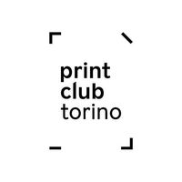
Print Club Torino
A studio for printing and graphic experimentation: screen printing, risograph and etching, with workshops and masterclasses.6 activities coming up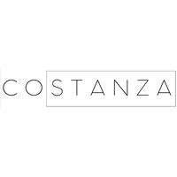
Spazio Costanza
A shared art studio run by illustrators in Via Buniva, Vanchiglia, hosting workshops in linocut, fabric painting, collage, punch needle and comics, drawing evenings and poetry meet-ups.6 activities coming up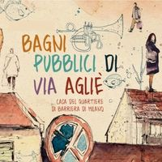
Bagni Pubblici
The community centre of Barriera di Milano on Via Agliè: public showers, a community bistro and plenty of courses and workshops for the neighbourhood.5 activities coming up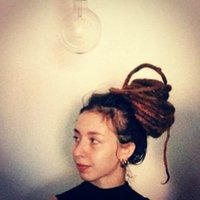
BlaBlanche Lab
Bianca’s textile studio in Via Beaulard, opened in autumn 2026: crochet and knitting courses, embroidery and sashiko workshops and sessions with guest makers.5 activities coming up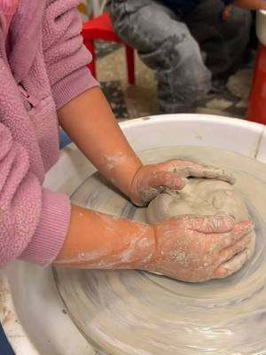
Bunbury
Art studio for children and teens in Santa Rita: weekly art, ceramics and theatre courses and Saturday workshops for little ones.5 activities coming up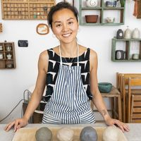
Chu Lab
Chu’s ceramics studio in a courtyard on Via Vidua, in San Donato: wheel-throwing courses for all levels and hand-building for children.5 activities coming up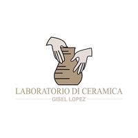
Laboratorio di Ceramica a Manta
Gisel López’s ceramics studio in Manta, with flexible lesson times and workshops with breakfast or an aperitivo.5 activities coming up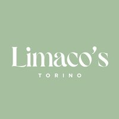
Limaco’s
Turin studio for custom cakes and parties which, as Chill Experience, runs evenings where you paint or decorate your own cake in city-centre venues.5 activities coming up- Marilù Lab
The textile arts school of designer and teacher Sara Tasca: crochet, tatting, embroidery and weaving, with weekly courses in Turin, Collegno and Venaria, plus private and online lessons.5 activities coming up 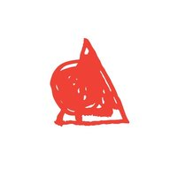
Mercato Centrale Torino
The covered food market at Porta Palazzo, with food stalls, a cooking school and spaces for workshops and themed festivals.5 activities coming up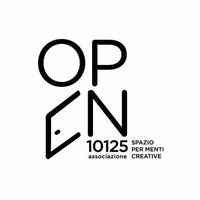
OPEN 10125
A community of fashion designers on Via Principe Tommaso, with sewing courses and tailoring workshops.5 activities coming up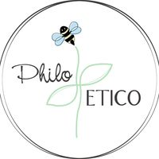
Philo Etico
Antonella and Carmen make soy wax candles and resin objects, and run creative workshops for adults and children between Cuneo and Turin.5 activities coming up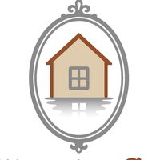
Riflessi di Casa
A craft and homeware shop in Villar Perosa that doubles as a space for creative workshops: ceramics, macramé, botanical jewellery and wreaths.5 activities coming up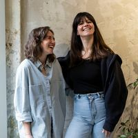
Velvet Truffle Riot
Art workshops in Italian and English, for all levels, at the studio on Via Cagliari: calligraphy, printing, collage, embroidery and open studio evenings.5 activities coming up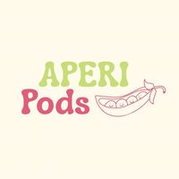
Aperi Pods
Creative workshops around Turin, often with an aperitivo or brunch: knitting, embroidery, painting and other crafts to enjoy in good company.4 activities coming up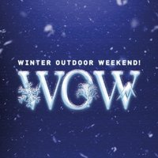
Ente Fiera Fredda
The body behind the Fiera Fredda fair and WOW – Winter Outdoor Weekend in Borgo San Dalmazzo, with outdoor activities, amateur races and sports taster sessions.4 activities coming up Fablab Torino
Fablab Torino
A digital fabrication lab with courses on using 3D printers, laser cutters and CNC milling machines, plus electronics workshops for young people.4 activities coming up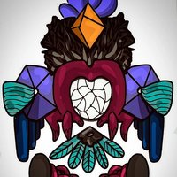
Macraman
Jacopo makes micro-macramé jewellery with natural stones and crystals, and runs workshops and courses at G.A.J.A. Lab in San Salvario.4 activities coming up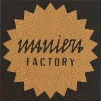
Maniera Factory
A ceramics studio in Vanchiglia run by Ceramiche Musso and Maccu Ceramiche: modelling workshops, wheel-throwing lessons and private events.4 activities coming up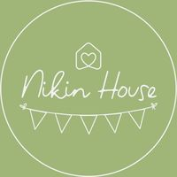
Nikin House
A party hall and event space in Borgaro Torinese, with creative workshops for children and painting and art therapy evenings for adults.4 activities coming up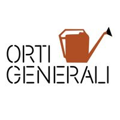
Orti Generali
Urban allotments along the Sangone, in Mirafiori: gardening and nature courses, trips and outdoor activities for all ages.4 activities coming up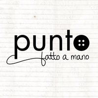
Punto fatto a mano
Since 2012 Mariangela has made personalised «talking» jewellery, and in Turin she runs the Ritagli Preziosi workshop, turning a mini collage into a pendant or brooch.4 activities coming up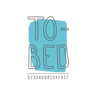
TObed
A charming bed & breakfast on Via Argonne, in Borgo Po, hosting workshops and small events with a range of artists and makers: painting, embroidery, crochet and candles.4 activities coming up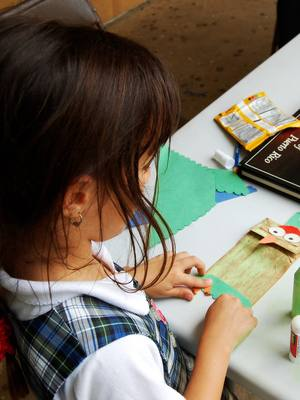
Associazione Culturale TOTO
An association in Volpiano offering free theatre, reading and creative workshops for children, teenagers and adults.3 activities coming up- Aula44
An events space in Via Caboto with creative workshops, autobiographical writing, murder mystery games and themed evenings.3 activities coming up  BAO NOW
BAO NOW
Creative experiences with breakfast or aperitivo in venues in Turin, Milan and Rome: perfume, terrariums, crochet, painting, ceramics, and weekend retreats too.3 activities coming up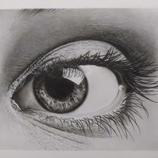
Barbara Sirtoli
Portrait artist, illustrator and drawing teacher: weekly courses in drawing, painting, ink and pastel at several venues in Turin and, every other month, two-hour soft pastel workshops. The @workshop.arte.torino profile is the one for her workshops.3 activities coming up- Casa del Quartiere di San Salvario
An open, multicultural space on Via Morgari, with courses, workshops and gatherings for the neighbourhood.3 activities coming up 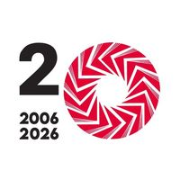
Circolo dei Lettori
The Circolo dei Lettori in Via Bogino: author talks and, on Saturday afternoons, reading and creative workshops for children.3 activities coming up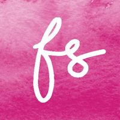
Favole di Seta
Maura Abello’s atelier, which makes made-to-measure wedding dresses and teaches sewing: beginners’ courses, single-garment workshops and shared sewing evenings.3 activities coming up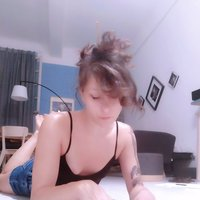
Gabriella Saiello
A collage artist running group workshops where people invent fantastic creatures for a shared bestiary.3 activities coming up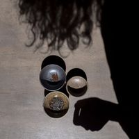
Giada Biagioni Ceramiche
Giada Biagioni’s ceramics studio in Via Marchese Visconti, with clay modelling workshops for complete beginners too.3 activities coming up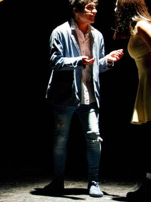
Giulia Cearini
Actress and writer: diction courses and theatre workshops for children and teens at Polo Le Rosine.3 activities coming up- Hanami Design
A traditional and contemporary kintsugi studio in Turin: one-off pieces and kintsugi jewellery workshops.3 activities coming up - I Gonfi
A family venue in Candiolo with bouncy castles and children’s parties, which also hosts dance courses and workshops for parents.3 activities coming up 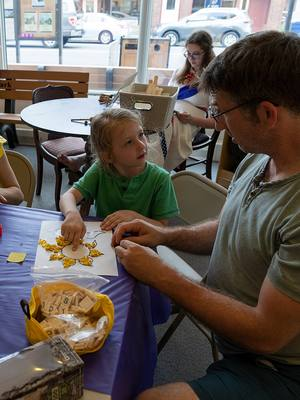
La Terra Galleggiante
A puppet and object theatre company that brings Ciurma! to Pinerolo: family Sundays with a creative workshop and a show.3 activities coming up- lazypear
Handmade crochet bags and accessories from Turin, and Lazy Workshops where you learn to make a cord or a small accessory, in bars and spaces around the city.3 activities coming up - L’Isola di Pic Pic
Denise sews accessories for children and adults and runs Cucito a Merenda, beginner sewing workshops between Turin and the province of Cuneo.3 activities coming up 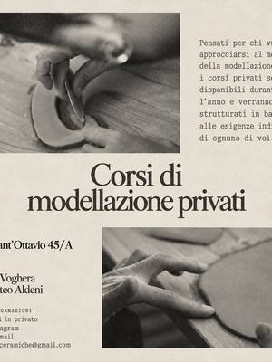
Maccu
3 activities coming up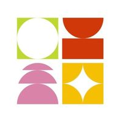
Masala Studio
Plant-based cookery and mindfulness courses on Via Ormea.3 activities coming up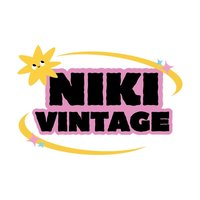
Niki Vintage
A vintage clothing shop with a tailoring workshop in Corso Belgio: sewing workshops for very small groups and themed afternoons.3 activities coming up- NODO Concept Space
A concept space for artists and makers, with workshops and classes.3 activities coming up 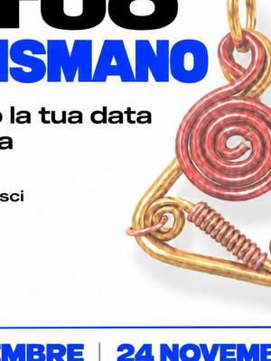
Nume Olistica
Holistic meetings and workshops, including evenings on tarot as a tool for introspection.3 activities coming up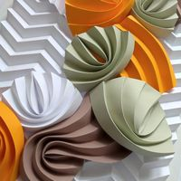
Origami Pop
Margherita Rojas Melo’s origami lamps; she teaches paper folding in her workshops.3 activities coming up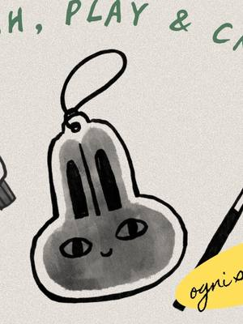
Petites Révolutions
A space for children in Via Collegno, Turin, with creative workshops and theatrical readings.3 activities coming up- Studio Biscotto
Rebeca and Carolina’s studio of hand-painted ceramics on Via Monti, with decorating workshops.3 activities coming up - Tenuta Carpe Diem
An estate surrounded by greenery in San Mauro di Boves, hosting creative breakfasts and aperitivi.3 activities coming up - Winelivery Bar & Enoteca
A wine bar in the city centre with wine and vermouth tastings.3 activities coming up - 123 Stella
Creative workshops for children.2 activities coming up - Across the Glass
A studio for stained glass and Tiffany lamps on Corso Regina Margherita, with workshops to learn the technique from scratch.2 activities coming up - Al Ventuno
Bar and pastry shop in Pianfei, near Mondovì, hosting creative workshops with an aperitivo or breakfast.2 activities coming up - Aland Art Studio
2 activities coming up - Alter Ego
A bar and restaurant in Pianfei, near Mondovì, that hosts KREA on Saturday afternoons: creative workshops with local makers and a buffet snack.2 activities coming up - Andrea Marzolla (Tilt Music)
2 activities coming up - Angelica Nolasco
Watercolour and glass painting workshops at the Atelier Crea-Arti in Cuneo.2 activities coming up - Aperitivo Artistico
Beatrice runs aperitivos where people paint together, mostly around Biella but also in Turin and the Langhe.2 activities coming up  Arcade
Arcade
A games venue at Lingotto with board game nights, Magic tournaments and murder mystery dinners.2 activities coming up- Bocciofila Vanchiglietta
An ARCI club for bowls, food and cards, with social inclusion projects and guest workshops, such as kombucha making.2 activities coming up - Cascina Macondo
An association running inclusive workshops in dance movement, creative writing and reading aloud.2 activities coming up - Chantal
Artist and native English-speaking teacher: art courses and workshops in English at the Atelier Crea-Arti in Cuneo.2 activities coming up - Chiara Allione
2 activities coming up - Città del Sole
A toy and children’s book shop that runs creative workshops, story times and family games every month at its Via Nizza store.2 activities coming up - Claudia Bellin (Camillo quante storie)
Claudia Bellin tells stories to children as Camillo quante storie and runs reading, puppet and botanical paper workshops at the Circolo dei Lettori and other spaces in Turin.2 activities coming up  Club del Cucito di Studio Indaco
Club del Cucito di Studio Indaco
Studio Indaco’s sewing group in Settimo Torinese: machine-sewing workshops to make accessories, with machines available.2 activities coming up Daphne
Daphne
2 activities coming up- Diletta
Ceramic decoration and kintsugi workshops at Pottery Lab.2 activities coming up - Dusty Jazz
Lindy Hop, jazz roots and blues courses and events in Turin, including the Swing Train Festival.2 activities coming up - Enrico Graziano
Calligrapher specialising in English roundhand: weekly courses and one-day workshops at Polo Le Rosine.2 activities coming up - Eppi Lab
Elena Pinsoglio sews, embroiders and works in crochet and macramé: she runs apericrochet evenings and courses, including at the Abilmente fair in Turin.2 activities coming up  Esmeralda Officina dei Fiori
Esmeralda Officina dei Fiori
A florist running workshops on wreaths and Christmas arrangements, including at Tenuta Carpe Diem in Boves.2 activities coming up- Florè Bottega del Fiore
Florist in Mondovì: flowers, plants and wedding arrangements, with workshops on festive wreaths and centrepieces.2 activities coming up - Gastronomia L’Agenzia di Viaggi
A deli in Cit Turin cooking dishes from all over the world, which runs workshops, tastings and creative aperitivi.2 activities coming up - GCGiulia Candido
2 activities coming up - Hiki3D
A 3D design and printing studio in Turin: custom prints, design objects and 3D printing workshops.2 activities coming up  Ivana Sunjic
Ivana Sunjic
Portrait photographer, former student and assistant of Steve McCurry: photography courses and workshops for beginners and intermediate level.2 activities coming up- La Pitusa
A flower and plant shop in Cuneo that runs workshops on wreaths, terrariums and floral arrangements.2 activities coming up - Laboratorio MalaErba
Anomalia Teatro’s creative studio and theatre on Via Verrès, with drama courses and performances.2 activities coming up - Libreria Sur
An international bookshop in Vanchiglia with books in Spanish, Portuguese and Italian, conversation groups and watercolour and collage workshops.2 activities coming up - Lilia Miceli
An illustrator who runs a monthly Saturday series of linocut workshops at Spazio Costanza.2 activities coming up - Maria Cocciolo
Cake designer: courses in sugar paste modelling and piping for adults and children at Polo Le Rosine.2 activities coming up - Marta Pais
2 activities coming up - Maurice
An LGBTQIA+ cultural club in Via Stampatori, with a library, meeting groups, creative workshops and solidarity tastings.2 activities coming up - Mery Rigo
Hyperrealist painter and founder of Estrattismo, teaching painting techniques to children, teens and adults at Polo Le Rosine.2 activities coming up - MUSLI
The Museum of Schools and Children’s Books at Palazzo Barolo, with weekend workshops on calligraphy and pop-up books for children and families.2 activities coming up - Nanù Lab Kids
Naomi Re’s creative workshops in Pinerolo: no experience needed and materials always included.2 activities coming up - Officina Sashiko di Studio Indaco
Studio Indaco’s space in Settimo Torinese, with workshops in sashiko and Japanese embroidery.2 activities coming up - Officine Creative Torino
An association at Cecchi Point with screen printing and cyanotype courses and an open studio on Thursdays.2 activities coming up - Panacea Social Farm
A social cooperative and sourdough bakery recognised by Gambero Rosso, with practical breadmaking courses.2 activities coming up  Patrizia Berto (Startlap)
Patrizia Berto (Startlap)
Workshops in natural dyeing, shibori and botanical printing.2 activities coming up- Più SpazioQuattro
The community centre of San Donato, with courses and workshops for the neighbourhood.2 activities coming up - Roberta Colombero
2 activities coming up - Rossella Eula
2 activities coming up - Sassi
Tailored clothes and accessories inspired by the botanical world, with pattern-cutting and sewing lessons.2 activities coming up - Scrapsa Lab
Sara’s studio in the San Paolo area: handmade personalised frames and Mappe dei Ricordi, plus workshops with breakfast or aperitivo to make your own gifts.2 activities coming up - Simona di Terraferma Ceramiche
Ceramicist: hand-building workshops for adults and children at Riflessi di Casa, in Villar Perosa.2 activities coming up - Soqquadro
A studio run by illustrators Marta Viggiani and Sara Mancuso in Collegno, with drawing, painting and comics courses for children and adults, workshops and an artists’ market.2 activities coming up - Soraia Aguirre
Art therapist and collage artist: expressive collage workshops and art therapy sessions for adults and families in Turin.2 activities coming up  Tiziana Boccalatte
Tiziana Boccalatte
2 activities coming up- TO much experience
A Turin project running workshops and experiences to break the routine and meet new people: ceramics, candles, themed evenings.2 activities coming up - Torino Social Knitting
Turin’s first club for young knitting and crochet fans, with meet-ups to stitch together.2 activities coming up - Un filo di Giustina
Crochet courses for learning from scratch.2 activities coming up - Yanañagui
An arts and crafts project that runs watercolour and collage workshops at Libreria Sur.2 activities coming up - 39/ Tramediffuse
Makers, readings and workshops in the centre of Pinerolo, on Via Trento.1 activities coming up - Albergo di Virtù Sartoria
Clothes and accessories sewn and painted by hand in a San Salvario studio.1 activities coming up - ABAlcetty Bar
1 activities coming up - Alma Mandala
Simona paints dot art mandalas on wood, clocks and jewellery, and teaches the technique in small workshops.1 activities coming up - Aquarius Ceramica
A ceramics studio in the Cortile del Maglio, with wheel-throwing and hand-building courses in multi-session cycles.1 activities coming up - Arteaporte
A platform running group exhibitions and artist calls at the Con/Temporary Spaces in Turin, with the occasional creative workshop.1 activities coming up - Associazione Archeosofica Torino
A cultural association in Turin running courses on traditional herbalism and talks on self-knowledge at the Casa del Quartiere Barrito.1 activities coming up - Atelier CASP
1 activities coming up - Biblioteca della Regione Piemonte
The library of the Piedmont Regional Council, which besides books offers free talks and workshops for young people.1 activities coming up - BSBistrot Stazione by La Rosa Blu
1 activities coming up  BlaBla Photowalk Events
BlaBla Photowalk Events
Group photo walks through the streets of Turin.1 activities coming up- Caffè il Carillon
A café in Mondovì, in the hamlet of Sant’Anna Avagnina, with the Carillon Workshops: one workshop a month with a local maker and a buffet snack.1 activities coming up - Cafè Neruda
A venue in Borgo Vittoria with tango lessons and evenings.1 activities coming up - Camera di commercio di Torino e Regione Piemonte
1 activities coming up - CamPaint
Guided painting evenings with a drink in restaurants and bars in Turin, Milan and Asti: you paint a picture step by step and take it home.1 activities coming up - Casa Martini
The home of Martini in Pessione, with mixology experiences where you make your own cocktails.1 activities coming up  Cascina Roccafranca
Cascina Roccafranca
The community centre of Mirafiori Nord, with plenty of courses throughout the year.1 activities coming up- Claudia Cakes
Claudia, a cake designer near Turin, teaches cake and biscuit decorating through online courses and runs Apericake, aperitivo evenings where you decorate a mini cake.1 activities coming up - Cubo Teatro
A multidisciplinary contemporary theatre company, with drama courses and workshops.1 activities coming up - Erboristeria La Calendula
Herbalist’s shop and holistic studio in Poirino run by naturopath Daniela Negro, with evenings and workshops on herbs, essential oils and wellbeing.1 activities coming up - Flow Studio
A yoga, dance and meditation studio in Boves, with classes for adults and children and themed mornings.1 activities coming up - Folkestra & Folkoro
A folk music orchestra and choir, open to anyone who plays or sings.1 activities coming up - Fortango
Tango workshops and evenings at the Fortino.1 activities coming up - Frasy Giuste
Greta creates illustrated quotes and evening workshops where you paint your own «right quote», around Cuneo.1 activities coming up - Gioie di Creta
A ceramics studio in Cuneo with courses in modelling, decorating and glazing, plus weekend workshops.1 activities coming up - Giuppi Pasticceria
Giulia Orecchia’s artisan pastry business: cakes to order and decorating workshops, such as bento cakes.1 activities coming up - GlassGrow
Chiara makes terrariums, small glass ecosystems, and teaches how to build them in workshops on request.1 activities coming up - Hiking Taste Tour
Guided treks in the Langhe, among vineyards and landscapes.1 activities coming up - Jigeenyi
A venue for cultures and cuisines at Porta Palazzo, on Via Borgo Dora, with cooking, embroidery, dressmaking and collage workshops.1 activities coming up - Komorebi Lab
Paola Gaja’s studio devoted to contemporary kintsugi, the art of repairing ceramics with gold, with workshops by appointment.1 activities coming up - Kontiki
Environmental and cultural centre in Vanchiglia, home of Fridays for Future Turin: vegan dinners, theatre, stand-up, climate film screenings and a theatre course. ARCI membership required.1 activities coming up - Leone 1857
The historic pastille and chocolate factory in Collegno, with tours and workshops.1 activities coming up - Leumann Hub
A cultural space in the Leumann village in Grugliasco, with workshops for children.1 activities coming up - Like This Agency
Latin dance weeks in the snow, in Bardonecchia.1 activities coming up - LLLocanda Lubac
1 activities coming up - L’Autin
A winery in the Val Pellice with tours and wine tastings, including in a mine.1 activities coming up - M. Storyteller Lab
Martina brings creative writing and role-playing games to places around Turin with courses and workshops, many free or by donation.1 activities coming up - MadreIndia
A yoga and Ayurveda studio in Campidoglio with Flying Yoga classes on aerial silks, Kurunta and FeetUp.1 activities coming up - Manibargè
Minimal, colourful handmade jewellery by Virginia, with workshops to make your own.1 activities coming up - Marta
1 activities coming up - Marta e Maria ODV
A volunteer association in Alba running free creative workshops in painting, drawing and recycling on Saturday afternoons.1 activities coming up - Martilla Studio
Marta illustrates couple maps and custom gifts and runs evenings where you decorate tote bags with her illustrations.1 activities coming up  Montebello Market
Montebello Market
A market of creative makers in Via Montebello, at the foot of the Mole, on the third Sunday of the month, with free workshops run by the stallholders.1 activities coming up- Mulino Sambuy OdV
The association of the San Mauro Torinese mill, with walks in the hills.1 activities coming up - Museo Della Casa
A gallery and museum on Via Beccaria in Mondovì: exhibitions and an oil painting course for adults.1 activities coming up - Naïf
A paint-your-own ceramics studio in Vanchiglia: pick an object, paint it and collect it after firing.1 activities coming up - No Dice Unrolled
A group of players running role-playing game nights, such as Pathfinder Society sessions.1 activities coming up - Novel Academy
A drawing and painting school with courses throughout the year.1 activities coming up - Olga & Felce
A printmaking studio running workshops in etching, linocut and experimental techniques.1 activities coming up - Onde South
A group bringing pizzica and Southern Italian dances to Turin through residencies and workshops.1 activities coming up - Open Art House
An art space in Ivrea with photography and weaving workshops.1 activities coming up - Openlab573
A ceramics studio in San Salvario with wheel and hand-building courses, co-working and a firing service.1 activities coming up - Ouimiel Studio
Isabella Simiele’s ceramics studio on Via Porta Palatina, with hand-building workshops.1 activities coming up - Pagina37
A reading group that organises book-themed meet-ups and games, such as literary speed dating.1 activities coming up - Pancakes and Clouds
A shop of clothing and gifts inspired by Gilmore Girls that runs themed days with creative workshops in Milan and Rivoli.1 activities coming up - Pangramma
A design studio that also runs workshops for children.1 activities coming up - Parco del Monviso
The Monviso nature park, with bike trips and photography outings.1 activities coming up - Pintology
Out-of-the-ordinary evenings in Turin’s bars, with quizzes, games and activities for curious minds.1 activities coming up - Portineria di Comunità Borgo San Paolo
Community concierge in the Borgo San Paolo neighbourhood, hosting services and activities for residents.1 activities coming up - Progetto SLIP
A circus and aerial arts school in Barriera di Milano.1 activities coming up - Proyecto Gricel
A tango school with lessons, milongas and seminars.1 activities coming up - QB Creazioni
A modern ceramics studio on Piazza Fontanesi, in Vanchiglietta, with courses and workshops for adults and children.1 activities coming up - Quadratino
An independent concept store with two shops, in Vanchiglia and on Via XX Settembre: quirky objects, gift ideas, design and vintage, plus the odd special evening.1 activities coming up - Retrobottega
A shared studio and concept store in San Salvario, home to Stella Bellisario Ceramiche and Shori.lab, hosting workshops in ceramics, bookbinding, crochet and etching.1 activities coming up - Ristoro
The bar in the Cecchi Point courtyard, which also hosts evenings and workshops.1 activities coming up - Rita Capparelli
She runs Pilates a Palazzo: Pilates classes and breakfast in Turin’s historic palazzi, in a different venue each time.1 activities coming up - Ruthvi Deev
Indian dance courses and intensives, from Bollywood to Garba.1 activities coming up - SSSan Salvario Emporium
1 activities coming up - Simona Evoli
Workshops in belly dance and Egyptian folk dance.1 activities coming up - Slow Town Blues
Blues dance workshops and evenings.1 activities coming up - Smith’s British
1 activities coming up  Soffio nel Vento
Soffio nel Vento
An artisan workshop and shop in Moncalieri: scented candles, favours and personalised gifts, with the occasional workshop.1 activities coming up- Solo Cose Belle
A Turin association running urban walks and hikes with the Materia Escursioni community, fanzines and a network of independent artists.1 activities coming up - Spazio Elastico
A shared art studio in Grugliasco with painting and writing workshops and wellbeing sessions.1 activities coming up - SPLIT Teatro
A theatre school with courses in acting, musical theatre and singing.1 activities coming up - Studio21 Street Dance School
A street dance school at Lingotto.1 activities coming up - Surf In Town Community
Surfskate lessons at Parco Dora.1 activities coming up  Taglia e Cuci di Sabina Marcellino
Taglia e Cuci di Sabina Marcellino
A haberdashery and studio in Savigliano with knitting, crochet and sewing classes for beginners.1 activities coming up- TSTen Shodo
A Japanese calligraphy (shodo) school running courses and open lessons at Arashi Dojo.1 activities coming up - The Place Torino
An events space on the third floor of Green Pea, in Lingotto, which also hosts family workshops.1 activities coming up - Torteria Bistrò
A pastry shop and bistro in central Biella hosting art aperitivos and creative workshops.1 activities coming up - TFTracce Festival
A festival bringing wine tastings and meetings with producers to the Biella and Canavese areas.1 activities coming up - Vague Bizarre
Illustrator and tarot reader between fashion and the esoteric: readings, commissioned illustrations and tarot evenings in Turin and Milan.1 activities coming up - Villa Teresa
A historic villa with a garden in Borgo San Dalmazzo, just outside Cuneo, hosting events and creative workshops.1 activities coming up - Vitadasingle.net
1 activities coming up - Vivere d’Arte
A music and singing school in San Salvario, with seminars.1 activities coming up  Workshops Fotografici eu
Workshops Fotografici eu
Runs photography workshops around Italy, including street photography walks in Turin.1 activities coming up- YGYoga Gandiva
1 activities coming up - ZAC!
The cultural centre at Ivrea station: live music, markets, food and workshops open to the whole town.1 activities coming up - Eataly Torino Lingotto
Eataly’s cookery school at Lingotto: cooking classes, pasta and pastry courses, wine, beer and olive oil tastings, and lessons for children and families.64 activities coming up - STUDIOFOOD33
A cookery studio on Via dei Mille where you cook alongside the chefs: themed evening cooking classes, from sushi to fresh pasta, also for parties and groups.22 activities coming up - Reboot Teatro
A school of improv, acting and stand-up comedy in Turin and Cuneo, with year-long courses and guest workshops.12 activities coming up - Slow Food
The association for good, clean and fair food, which runs some of the cooking lessons at Eataly.6 activities coming up - Alessia Rossino
2 activities coming up - Caterina Mosca
Plant-based cooking lessons at Eataly.2 activities coming up - Chiara Lazzarin
Cooking lessons at Eataly, from edible gifts to gyoza.2 activities coming up - Patrik Lisa
Chef: cooking classes at StudioFood33.2 activities coming up - Tabete Market
A Japanese food market that runs Japanese cooking classes and workshops.2 activities coming up - Cesarine
Cooking lessons in the homes of local cooks, to learn how to make pasta from scratch.1 activities coming up - Choco-Story Torino
The chocolate museum in San Salvario, with workshops on making chocolate.1 activities coming up - Chocolate7
A chocolate shop in the city centre with guided chocolate tastings.1 activities coming up  Club Joy
Club Joy
1 activities coming up- Cook & Walk
Cooking lessons with a chef to learn fresh pasta and Italian desserts.1 activities coming up - Eccetera
A bar in Pozzo Strada with evenings for mixing your own cocktails.1 activities coming up - Forchette a sinistra
Italian cooking lessons: pasta, pizza and tiramisù.1 activities coming up - Luzzi B
Acrylic painting evenings with drinks, in an atelier with a greenhouse.1 activities coming up - L’Olio di Eva
A shop in the city centre with olive oil, wine and cheese tastings.1 activities coming up - Mosca Bianca di Gaia Sandrelli
A print studio in San Salvario, with linocut workshops.1 activities coming up - Santaromero Coffee
A specialty coffee roastery with guided tastings.1 activities coming up - Spazio Incompleto Gioielli
A goldsmith’s studio with courses for making silver jewellery.1 activities coming up - Vignaiole Prever
A winery in Villarbasse with fresh pasta lessons paired with its wines.1 activities coming up